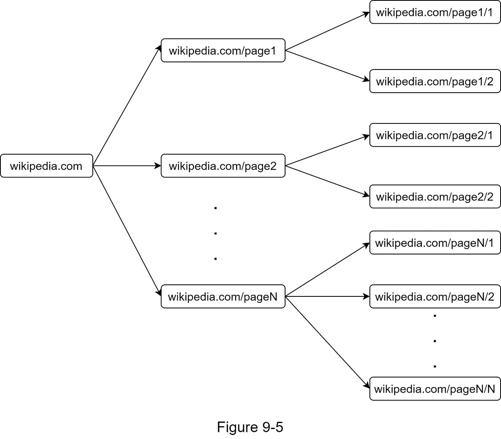
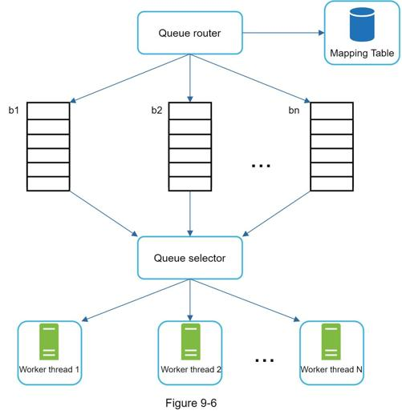
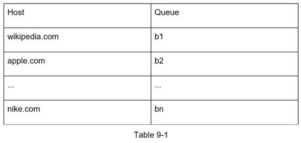
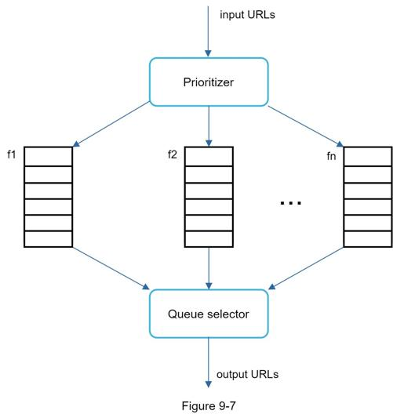
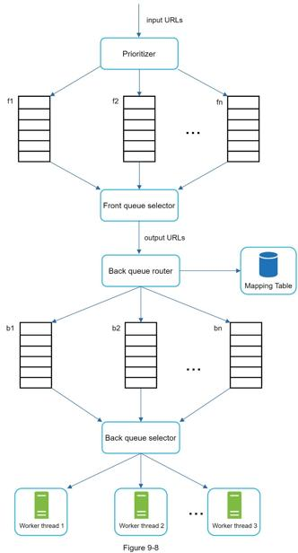
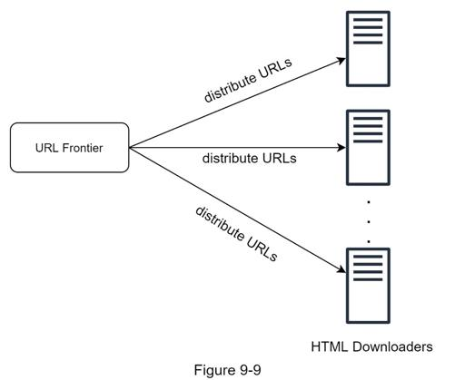
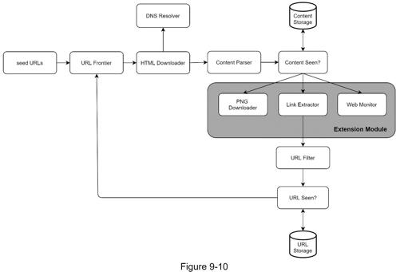

Up until now, we have discussed the high-level design. Next, we will discuss the most important building components and techniques in depth:
•Depth-first search (DFS) vs Breadth-first search (BFS)
•URL frontier
•HTML Downloader
•Robustness
•Extensibility
•Detect and avoid problematic content
You can think of the web as a directed graph where web pages serve as nodes and hyperlinks (URLs) as edges. The crawl process can be seen as traversing a directed graph from one web page to others. Two common graph traversal algorithms are DFS and BFS. However, DFS is usually not a good choice because the depth of DFS can be very deep.
BFS is commonly used by web crawlers and is implemented by a first-in-first-out (FIFO) queue. In a FIFO queue, URLs are dequeued in the order they are enqueued. However, this implementation has two problems:
•Most links from the same web page are linked back to the same host. In Figure 9-5, all the links in wikipedia.com are internal links, making the crawler busy processing URLs from the same host (wikipedia.com). When the crawler tries to download web pages in parallel, Wikipedia servers will be flooded with requests. This is considered as “impolite”.

•Standard BFS does not take the priority of a URL into consideration. The web is large and not every page has the same level of quality and importance. Therefore, we may want to prioritize URLs according to their page ranks, web traffic, update frequency, etc.
URL frontier helps to address these problems. A URL frontier is a data structure that stores URLs to be downloaded. The URL frontier is an important component to ensure politeness, URL prioritization, and freshness. A few noteworthy papers on URL frontier are mentioned in the reference materials [5] [9]. The findings from these papers are as follows:
Generally, a web crawler should avoid sending too many requests to the same hosting server within a short period. Sending too many requests is considered as “impolite” or even treated as denial-of-service (DOS) attack. For example, without any constraint, the crawler can send thousands of requests every second to the same website. This can overwhelm the web servers.
The general idea of enforcing politeness is to download one page at a time from the same host. A delay can be added between two download tasks. The politeness constraint is implemented by maintain a mapping from website hostnames to download (worker) threads. Each downloader thread has a separate FIFO queue and only downloads URLs obtained from that queue. Figure 9-6 shows the design that manages politeness.

•Queue router: It ensures that each queue (b1, b2, … bn) only contains URLs from the same host.
•Mapping table: It maps each host to a queue.

•FIFO queues b1, b2 to bn: Each queue contains URLs from the same host.
•Queue selector: Each worker thread is mapped to a FIFO queue, and it only downloads URLs from that queue. The queue selection logic is done by the Queue selector.
•Worker thread 1 to N. A worker thread downloads web pages one by one from the same host. A delay can be added between two download tasks.
A random post from a discussion forum about Apple products carries very different weight than posts on the Apple home page. Even though they both have the “Apple” keyword, it is sensible for a crawler to crawl the Apple home page first.
We prioritize URLs based on usefulness, which can be measured by PageRank [10], website traffic, update frequency, etc. “Prioritizer” is the component that handles URL prioritization. Refer to the reference materials [5] [10] for in-depth information about this concept.
Figure 9-7 shows the design that manages URL priority.

•Prioritizer: It takes URLs as input and computes the priorities.
•Queue f1 to fn: Each queue has an assigned priority. Queues with high priority are selected with higher probability.
•Queue selector: Randomly choose a queue with a bias towards queues with higher priority.
Figure 9-8 presents the URL frontier design, and it contains two modules:
•Front queues: manage prioritization
•Back queues: manage politeness

Web pages are constantly being added, deleted, and edited. A web crawler must periodically recrawl downloaded pages to keep our data set fresh. Recrawl all the URLs is time-consuming and resource intensive. Few strategies to optimize freshness are listed as follows:
•Recrawl based on web pages’ update history.
•Prioritize URLs and recrawl important pages first and more frequently.
In real-world crawl for search engines, the number of URLs in the frontier could be hundreds of millions [4]. Putting everything in memory is neither durable nor scalable. Keeping everything in the disk is undesirable neither because the disk is slow; and it can easily become a bottleneck for the crawl.
We adopted a hybrid approach. The majority of URLs are stored on disk, so the storage space is not a problem. To reduce the cost of reading from the disk and writing to the disk, we maintain buffers in memory for enqueue/dequeue operations. Data in the buffer is periodically written to the disk.
The HTML Downloader downloads web pages from the internet using the HTTP protocol. Before discussing the HTML Downloader, we look at Robots Exclusion Protocol first.
Robots.txt
Robots.txt, called Robots Exclusion Protocol, is a standard used by websites to communicate with crawlers. It specifies what pages crawlers are allowed to download. Before attempting to crawl a web site, a crawler should check its corresponding robots.txt first and follow its rules.
To avoid repeat downloads of robots.txt file, we cache the results of the file. The file is downloaded and saved to cache periodically. Here is a piece of robots.txt file taken from https://www.amazon.com/robots.txt. Some of the directories like creatorhub are disallowed for Google bot.
User-agent: Googlebot
Disallow: /creatorhub/*
Disallow: /rss/people/*/reviews
Disallow: /gp/pdp/rss/*/reviews
Disallow: /gp/cdp/member-reviews/
Disallow: /gp/aw/cr/
Besides robots.txt, performance optimization is another important concept we will cover for the HTML downloader.
Below is a list of performance optimizations for HTML downloader.
1. Distributed crawl
To achieve high performance, crawl jobs are distributed into multiple servers, and each server runs multiple threads. The URL space is partitioned into smaller pieces; so, each downloader is responsible for a subset of the URLs. Figure 9-9 shows an example of a distributed crawl.

2. Cache DNS Resolver
DNS Resolver is a bottleneck for crawlers because DNS requests might take time due to the synchronous nature of many DNS interfaces. DNS response time ranges from 10ms to 200ms. Once a request to DNS is carried out by a crawler thread, other threads are blocked until the first request is completed. Maintaining our DNS cache to avoid calling DNS frequently is an effective technique for speed optimization. Our DNS cache keeps the domain name to IP address mapping and is updated periodically by cron jobs.
3. Locality
Distribute crawl servers geographically. When crawl servers are closer to website hosts, crawlers experience faster download time. Design locality applies to most of the system components: crawl servers, cache, queue, storage, etc.
4. Short timeout
Some web servers respond slowly or may not respond at all. To avoid long wait time, a maximal wait time is specified. If a host does not respond within a predefined time, the crawler will stop the job and crawl some other pages.
Besides performance optimization, robustness is also an important consideration. We present a few approaches to improve the system robustness:
•Consistent hashing: This helps to distribute loads among downloaders. A new downloader server can be added or removed using consistent hashing. Refer to Chapter 5: Design consistent hashing for more details.
•Save crawl states and data: To guard against failures, crawl states and data are written to a storage system. A disrupted crawl can be restarted easily by loading saved states and data.
•Exception handling: Errors are inevitable and common in a large-scale system. The crawler must handle exceptions gracefully without crashing the system.
•Data validation: This is an important measure to prevent system errors.
As almost every system evolves, one of the design goals is to make the system flexible enough to support new content types. The crawler can be extended by plugging in new modules. Figure 9-10 shows how to add new modules.

•PNG Downloader module is plugged-in to download PNG files.
•Web Monitor module is added to monitor the web and prevent copyright and trademark infringements.
This section discusses the detection and prevention of redundant, meaningless, or harmful content.
1. Redundant content
As discussed previously, nearly 30% of the web pages are duplicates. Hashes or checksums help to detect duplication [11].
2. Spider traps
A spider trap is a web page that causes a crawler in an infinite loop. For instance, an infinite deep directory structure is listed as follows: www.spidertrapexample.com/foo/bar/foo/bar/foo/bar/…
Such spider traps can be avoided by setting a maximal length for URLs. However, no one-size-fits-all solution exists to detect spider traps. Websites containing spider traps are easy to identify due to an unusually large number of web pages discovered on such websites. It is hard to develop automatic algorithms to avoid spider traps; however, a user can manually verify and identify a spider trap, and either exclude those websites from the crawler or apply some customized URL filters.
3. Data noise
Some of the contents have little or no value, such as advertisements, code snippets, spam URLs, etc. Those contents are not useful for crawlers and should be excluded if possible.